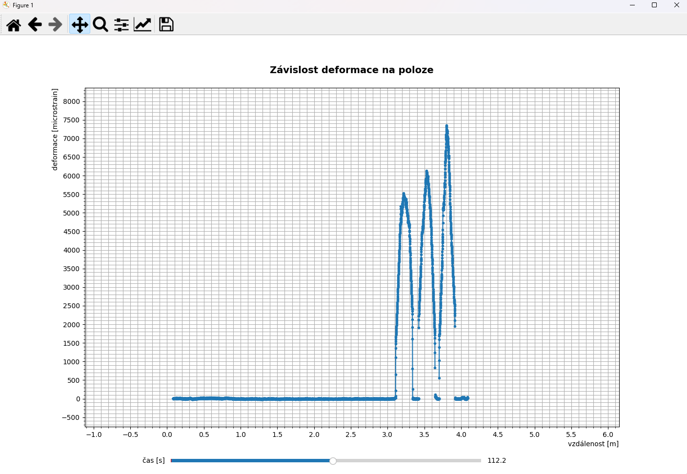
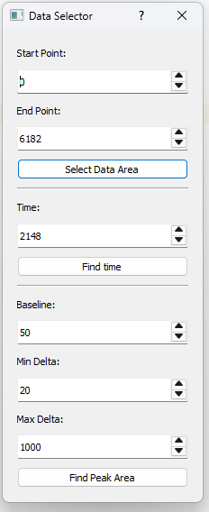
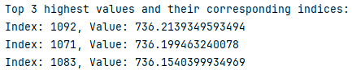
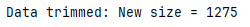
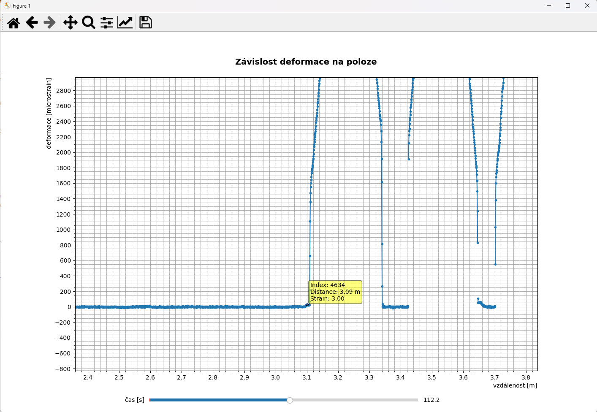
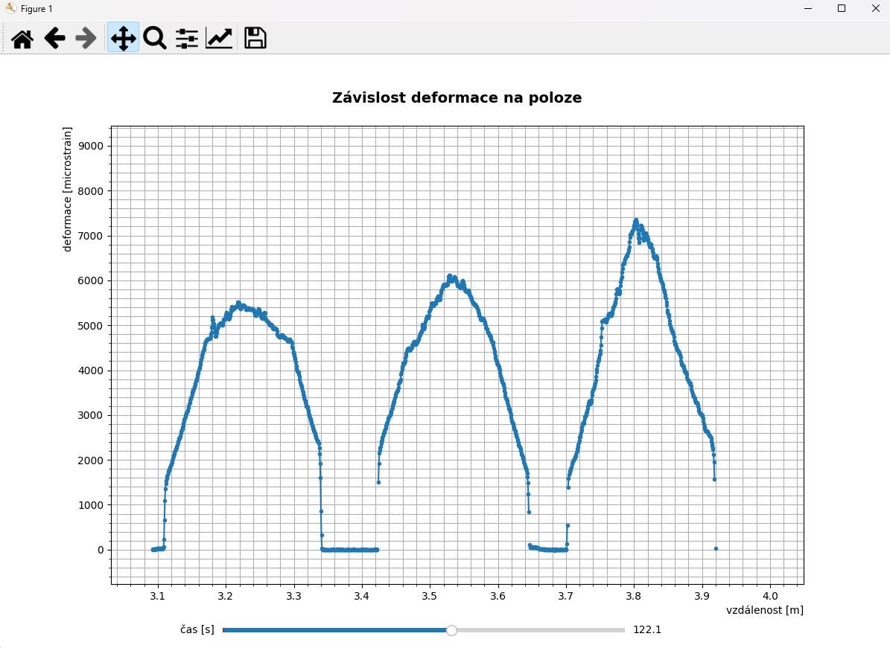

HowTo Guide
Program Stress Measurement Viewer poskytuje uzivateli jednoduchy graficky nahled namerenych dat ve formatu *.tsv, nalezeni vyznamnych oblasti (pro dalsi analyzu) a orezani nepotrebnych dat.
Otevreni souboru:
File -> Open Nacte *.tsv soubor, ketry obsahuje data z mereni deformace desky
Grafy
Pro graficky nahled namerenych dat lze pouzit :
- Zavislost deformace na poloze

Vyber dat automatizovane
Edit -> Data Area otevre dialogove okno, ktere umoznuje vybrat cilovou oblast dat, ktera budou v budoucnu podrobena dalsi analyze a orezani nepotrebnych dat.

Zmackni tlacitko "Find time"

Zmackni tlacitko "Find Peak Area"
Zmackni tlacitko "Select Data Area"

Vyber dat manualne z grafu

Cilova oblast dat

About
Click on Help > About verze aplikace, autor.